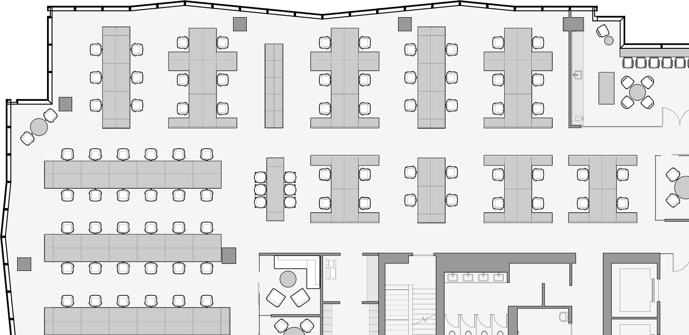

Test Fits
Office floors are technologically advanced and mindfully detailed with floor to ceiling acoustically optimized windows and state of the art airflow and temperature control .
Learn More 
Bay Park Centre is engineered to LEED™ Platinum and WELL™ specifications, from paint to panorama. It was designed not just for resource efficiency, but with its users' health wellness and quality of life at centre focus.
Along with access to shared green spaces the building offers high-efficiency energy and water solutions, highly optimized air filtration and ventilation, 500+ bicycle storage racks, and more.
Bay Park Centre has earned a coveted Platinum level Wired Certification for best-in-class internet infrastructure, the preeminent international program that rates and recognizes the infrastructure, technology and connectivity of office buildings.
" images="